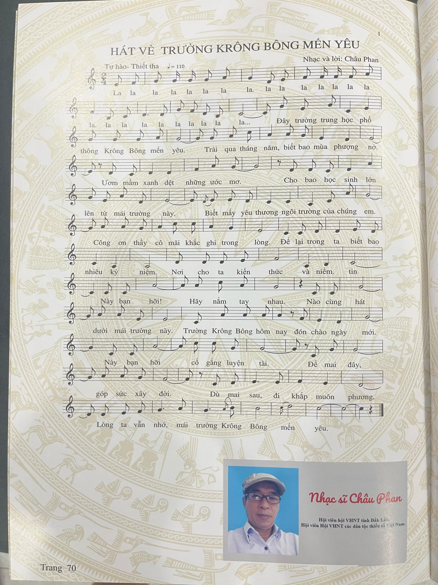

Bài Thơ Về Thầy Cô
"Nhớ Ơn Thầy Cô"
Thầy cô như ánh nắng mai,
Soi đường em bước ngày dài tương lai.
Bàn tay dìu dắt tháng ngày,
Yêu thương trao trọn chẳng hề phôi phai.


"Nhớ Ơn Thầy Cô"
Thầy cô như ánh nắng mai,
Soi đường em bước ngày dài tương lai.
Bàn tay dìu dắt tháng ngày,
Yêu thương trao trọn chẳng hề phôi phai.
Bài hát:
